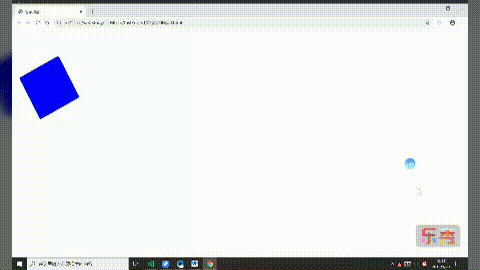

1、声明：@keyframes name{ }；
2、涉及到的属性
animation-name：动画名称
animation-duration：单次动画总时长
animation-timing-function：时间函数
animation-delay：播放前延时的时长
animation-iteration-count：播放次数 （特殊值：infinite 循环播放）
animation-direction：播放顺序（normal：正常播放 alternate：轮流反向播放）
3、简写animation: name duration timing-function delay iteration-count direction fill-mode;
4、例子：
<style>
@keyframes cart {
from {
left: 0;
top: 0;
border-radius: 0;
}
20% {
left: 200px;
top: 500px;
transform: rotateZ(720deg);
}
40% {
left: 400px;
top: 0;
border-radius: 50px;
}
60% {
top: 500px;
left: 600px;
border-radius: 50%;
}
80% {
top: 0px;
left: 800px;
border-radius: 50px;
}
to {
left: 0;
top: 0;
}
}
.Z {
height: 150px;
width: 150px;
position: relative;
background-color: blue;
animation: cart 10s linear 2s infinite alternate;
transition: all 2s;
}
</style>
</head>
<body>
<div class="Z">
</div>得到的效果：
